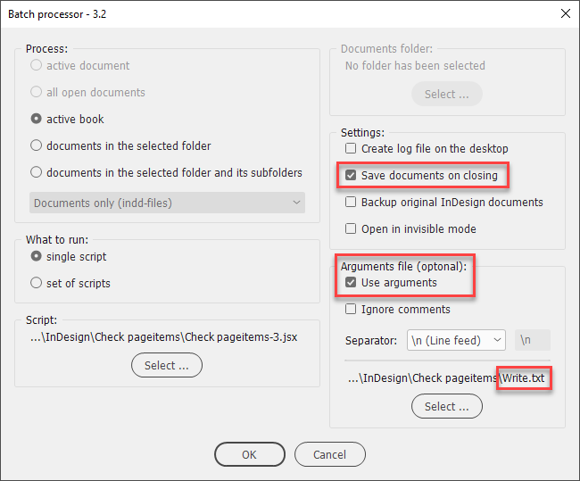
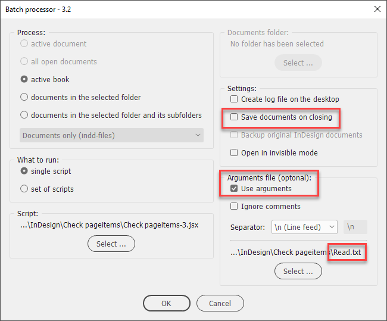
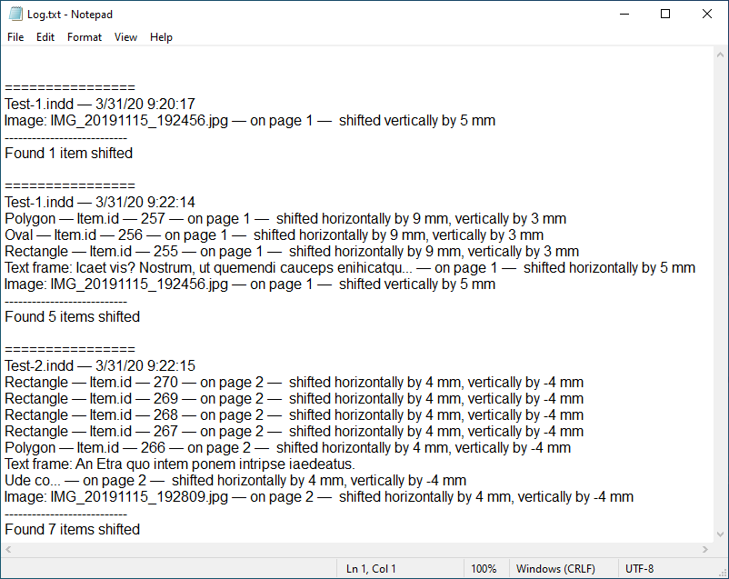

Check page items for shift
This script was written for Batch processor to solve the issue with Bug in the book’s Update Numbering feature.
It was written and tested in InDesign CC 2019 and 2020 both on Mac and Windows.
In brief, whenever I update numbering in a book (Update Numbering > Update Page & Section Numbers) while pages are shifted from recto to verso or vice versa, some elements on some pages are randomly moved a little — approx. 4 mm. — to the opposite page on the spread.
To solve the problem I run the script twice.
For the first time, before updating numbering, it reads the position (in scripting terms called geometric bounds) of every page item – rectangle, text frame, image, etc. – and remembers it within the given item (using the insert label method). These data are invisible to the user in InDesign and are accessible only by script. In other words, you can’t see or change it in the Script label panel.
For the second time, after updating numbering, the script reads the saved position and compares it with the actual location and if it has even a slight difference, it puts the item into the log file created on the desktop. If no shift occurs in the whole document, no log file is created which means nothing has changed.
To easily switch between the two modes, I use a couple of the arguments files that are included with the script.
Here are screenshots illustrating the process:
Write mode (first run)

Read mode (second run)

The resulting log showing the page items that moved after the first run.

The log contains the following information:
- Object type
- Object id (unique identifier used in scripting)
- The page number where it is located
- The document name
- horizontal shift in millimeters
- vertical shift in millimeters
Note: in the write mode, make sure to turn on the ‘Save documents on closing’ checkbox and turn it off in the read mode.
Alternatively, instead of remembering items’ locations, it is possible to lock-unlock all page items: locked items don’t move. But I had no time to implement such an idea yet.
Click here to download the script.
Back to the Scripts for batch processor page